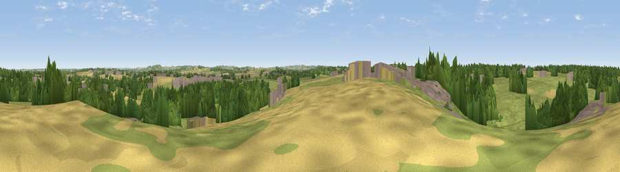

Viewpoint near Ufton
#36079 in England · top 72% of its area beats it · near Ufton · path 297 mWhere it is
The exact computed spot (SP 39325 61375). Click the marker for map links.
Public access: the nearest public right of way is about 297 m away — the final stretch may cross private land. Computed from Natural England's CRoW access layer and OpenStreetMap rights of way — not the legal definitive map. Always verify locally.
The view, rendered

A 360° render of this exact spot computed from the terrain model, tree cover and land cover — summer colours, afternoon light, calibrated against photographs of famous viewpoints. Real trees, hedges and buildings will differ in detail.
The panorama
Grey silhouette: terrain skyline in each direction (720 bearings, Earth curvature and refraction included). Dashed green: skyline with trees (+15 m) and buildings (+8 m) as obstacles. Blue strip: how far the ground is visible on each bearing.
Where the view opens
Wedge length = distance to the farthest visible ground on that bearing (vegetation-aware). Rings at 10, 25 and 50 km.
What fills the view
55% grassland · 22% woodland · 17% cropland · 6% built-up
Angular shares of the visible panorama (visual magnitude), not map area. Landscape diversity 0.50 (0–1 Shannon).
Key numbers
More beautiful places nearby
The staircase of upgrades: each row has a higher view potential than everything closer. Driving times are estimates from straight-line distance, calibrated against real road routing — check an actual route before setting out.
| Place | Direction | Drive | Score |
|---|---|---|---|
| Burnt Heath | NNW · 4 km | ~9 min | 32.4 |
| Viewpoint near Ladbroke | ESE · 4 km | ~10 min | 36.8 |
| Crown Hill | WNW · 5 km | ~10 min | 41.7 |
| Viewpoint near Northend | S · 9 km | ~18 min | 65.3 |
| Viewpoint near Northend | S · 10 km | ~19 min | 66.0 |
| Viewpoint near Northend | S · 10 km | ~19 min | 69.7 |
| Viewpoint near Northend | S · 10 km | ~19 min | 70.3 |
| Viewpoint near Radway | S · 13 km | ~24 min | 71.7 |
52.24916, -1.42540 · source: screening · position refined by local search. Computed location — check access rights before visiting.